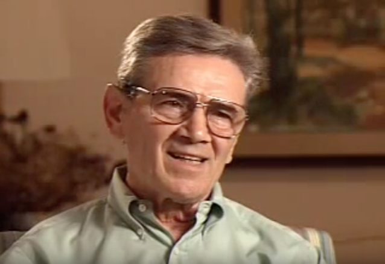

Leon Leyson
Biography and Analysis
Leon Leyson was born in 1929 in Narewka in Eastern Poland. About half the population of Narewka were Jewish and attended the only synagogue together. Leyson recalls a comfortable childhood surrounded by sibling and extended family. The family eventually moved to Kraków around 1938. His father was a machinist already living in the city after being transferred out of their hometown. When the family was forced into the ghetto at the end of 1940, Leyson noted that they already lived on the same side of the Vistula as Podgórze, “not too far from our original place.” People that refused to move were either caught or shot. The interviewer asks Leyson if he had ever seen anyone shot - he had - and whether he feared the same fate for his father. Leyson did, “all the time,” and offers memory of an incident that occurred in 1941. After taking an elderly woman to the hospital, Leyson and a friend were late returning home before curfew. The two were caught and fired upon by a guard, the shots missed Leyson’s friend and the two ran in separate directions. Leyson narrowly escaped a second round of gunfire because he had just, “managed to jam myself into an entryway in another apartment house that was recessed.” After he was let inside, Leyson spent the rest of the night hidden in an apartment without being able to let his family know of his safety. The episode had a lasting impression and he “never went back” to the same area and used to “make a big turn…to avoid that place where the guard stood.” Leyson wraps up the memory, wryly noting that it was just one of many incidences that his family went through. For him, the two worst things about the ghetto was hunger and constant danger of trouble.
Though only four of the 181 segments in his testimony, Leyson’s memory of the harrowing night offers a spatial journey through the ghetto. It begins at the hospital and identifies several interactive points: a spot where a guard stood, a recessed doorway that suddenly became a source of evasion, and a new buffer point that Leyson would avoid for the rest of his residency in the ghetto. The spatial narrative brings together points of reference both readily identifiable, like the hospital, and places that only carry meaning for Leyson as a witness. For example, after an hour of recording, near the end of the second video, Leyson describes his sister’s forced removal to a nearby labor camp as another uncontrollable incident. Responding to imagined critics as to why the family did not resist or leave the ghetto, Leyson retorts “this was our home, this was our place, people didn’t just pick up and move and there was no place else to go.” Without going into detail, Leyson mentions that he slipped out of the ghetto many times as a child without detection, but lacking secure network or shelter in greater Kraków meant that it was still safest to remain in the place of home and family life. The fear of being found and arrested outside of the ghetto was worse than managing the uncertainty of daily life within.
Audio and Transcript
Listen to a snippet of Leyson's testimony below.
“While we were in the ghetto I was - my friend and I went to take a woman to the hospital. She was a small woman, she was an older lady and she needed to be - she was very ill. So he and I got her in a stretcher and we took her to the hospital. And on the way back it was 9 o'clock and we were a little bit past that time. And as we were coming around the corner there was the guard standing there and he was moving his rifle, getting ready to shoot. And my friend, he ran in one direction, and I was slightly behind him so I started running the other direction. And as I - he shot at him first and missed him then turned and shot at me and he missed me because I had just managed to jam myself into a entryway in another apartment house that was sort of recessed a little bit. So I stood there and thought maybe I was shot because I heard that when you’re shot you can’t tell or something. But anyways, I was just a kid. I knocked on the door and somebody actually opened the door and I spent the rest of the night there. And my parents and my sister and my brothers didn’t know where I was. It was in 1941, I must have been about 11 years old. Well, I never went past that spot again. I used to make a big turn to get where I was going to avoid the place where the guard stood.”